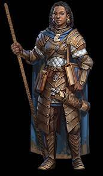

RACE |
DESCRIPTION |
ABILITY SCORE INCREASES |
AGE |
SIZE |
SPEED |
|---|---|---|---|---|---|
| Human
 |
In the reckonings of most worlds, humans are the youngest of the common races, late to arrive on the world scene and short-lived in comparison to dwarves, elves, and dragons. Perhaps it is because of their shorter lives that they strive to achieve as much as they can in the years they are given. Or maybe they feel they have something to prove to the elder races, and that’s why they build their mighty empires on the foundation of conquest and trade. Whatever drives them, humans are the innovators, the achievers, and the pioneers of the worlds. | All +1 | 78 yrs | Medium | 30 ft |
| Dwarf | Kingdoms rich in ancient grandeur, halls carved into the roots of mountains, the echoing of picks and hammers in deep mines and blazing forges, a commitment to clan and tradition, and a burning hatred of goblins and orcs—these common threads unite all dwarves. | Constitution +1 | 350 yrs | Medium | 25 ft |
| Elf | Elves are a magical people of otherworldly grace, living in the world but not entirely part of it. They live in places of ethereal beauty, in the midst of ancient forests or in silvery spires glittering with faerie light, where soft music drifts through the air and gentle fragrances waft on the breeze. Elves love nature and magic, art and artistry, music and poetry, and the good things of the world. | Dexterity +2 | 750 yrs | Medium | 30 ft |
| Halfling | The comforts of home are the goals of most halflings’ lives: a place to settle in peace and quiet, far from marauding monsters and clashing armies; a blazing fire and a generous meal; fine drink and fine conversation. Though some halflings live out their days in remote agricultural communities, others form nomadic bands that travel constantly, lured by the open road and the wide horizon to discover the wonders of new lands and peoples. But even these wanderers love peace, food, hearth, and home, though home might be a wagon jostling along a dirt road or a raft floating downriver. | Dexterity +2 | 250 yrs | Small | 25 ft |